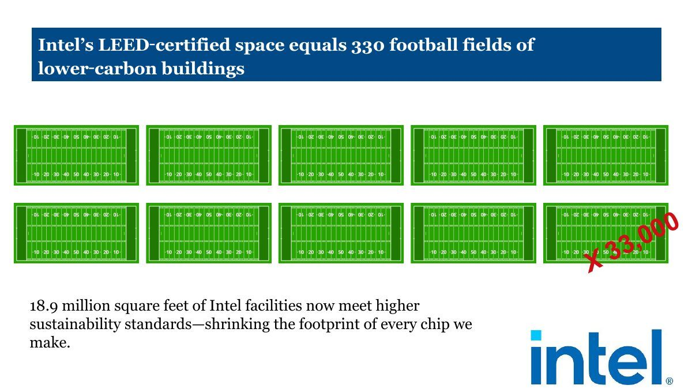
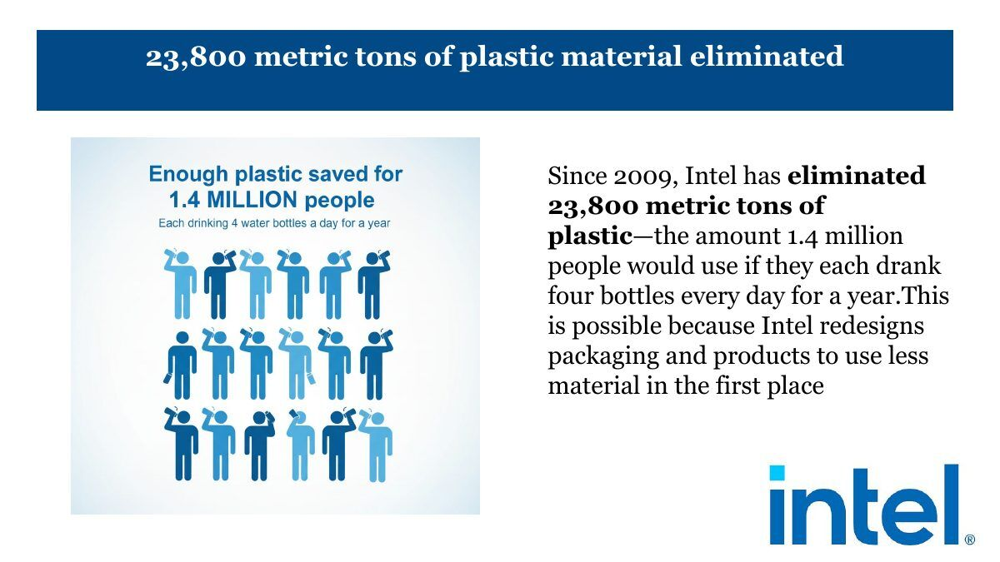
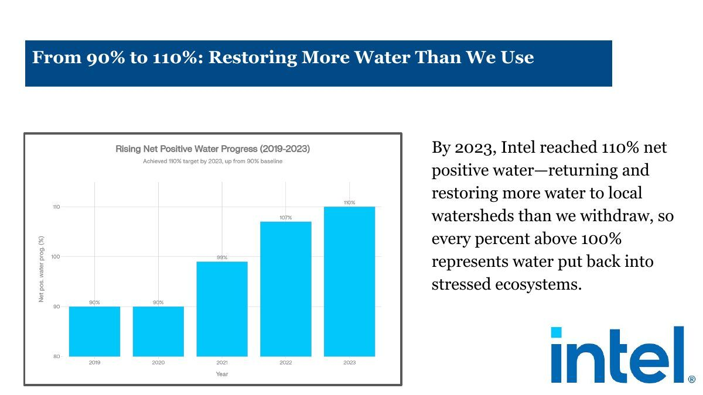
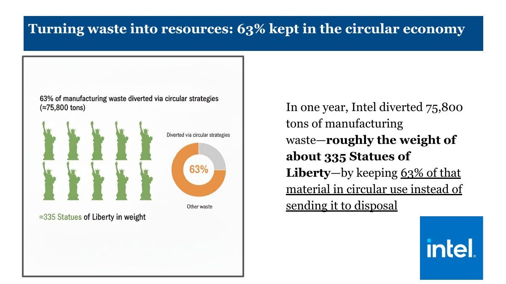

The problem
Sustainability reports are full of large, abstract numbers: square feet, metric tons, kilowatt-hours. They're accurate, but most readers can't picture them. The brief was to translate the report's metrics into clear visuals for people outside the industry.
Data
All figures come from Intel's Corporate Responsibility Report as reported by Intel. The everyday comparisons are my own conversions, made to give each figure a sense of scale.
Approach
For each metric I chose one familiar unit, did the conversion, and built a visual around it: pictograms for people and homes, a simple bar chart for the water trend, and a donut for the circular-economy share.
Deliverables
| Reported metric | Everyday comparison |
|---|---|
| 18.9 million sq ft of LEED-certified space | About 330 football fields of lower-carbon buildings |
| 23,800 metric tons of plastic eliminated since 2009 | What 1.4 million people would use drinking four bottles a day for a year |
| 1.6 billion kWh saved since 2020 | Enough to power about 150,000 average U.S. homes for a year |
| 75,800 tons of manufacturing waste, 63% kept in circular use | Roughly the weight of about 335 Statues of Liberty |
| 110% net positive water by 2023 | Shown as a rise from 90% to 110%, so every point above 100% is water put back |
| Net positive water in 4 countries | Doubling from 2 (U.S., India) to 4 (adding Costa Rica, Mexico) |




What this shows
A number only lands when the audience can picture it. This project was about choosing the right comparison for each metric and keeping the visuals simple enough to read at a glance.